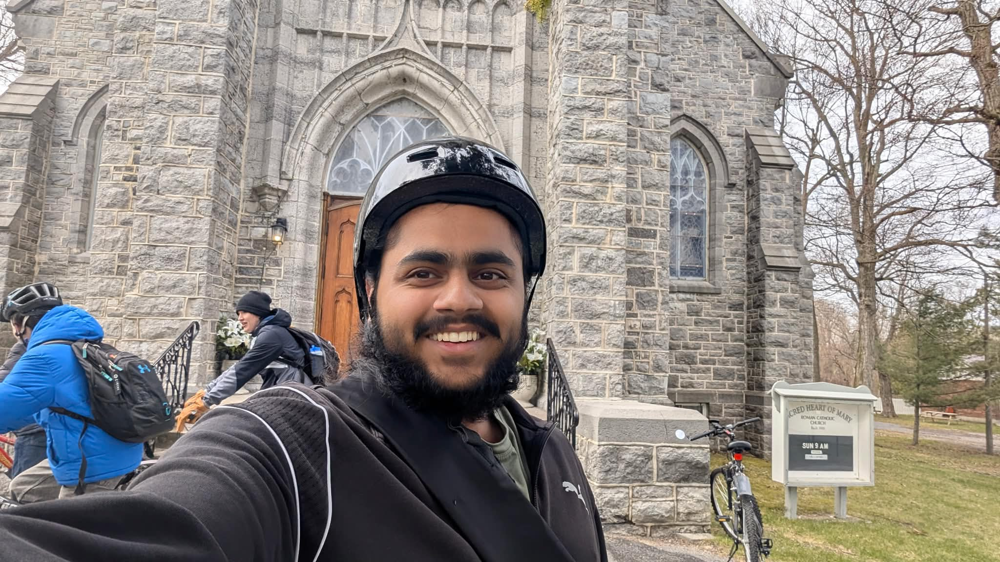

Hi! My name is Sehaj, and I am a second-year Computer Science student at Queen's University. I am passionate about technology, programming, and creating things on the internet.
Some of my hobbies include 3D papercraft, anime, video games, and working on creative projects. I love learning new skills, building things, and challenging myself to grow as a person.
I want to share my experiences, happiness, and journey with the world — kind of like how the internet was originally meant to connect people and let them express themselves freely.
This website is inspired by the old internet and the nostalgic feeling of personal websites from the early web era.
I have experience with several programming languages, including Java, Python, C#, and Visual Basic.
I am also improving my web development skills and have experience using HTML, CSS, and JavaScript.
Currently, I am working on projects such as this personal website, a blog, and a YouTube channel where I share parts of my daily life and projects.